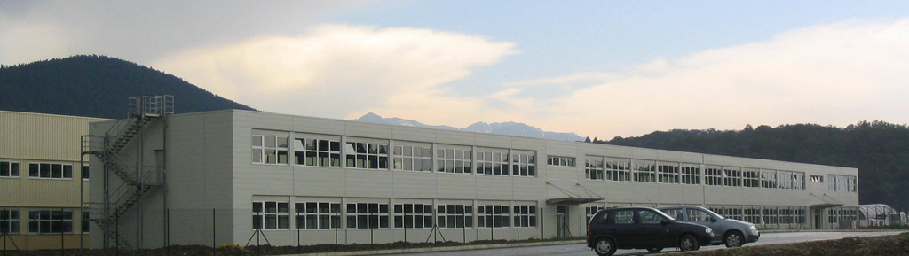
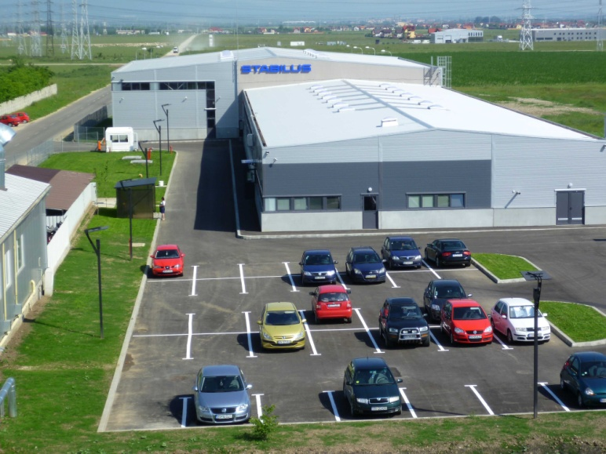

Fabrica de ciment Portland Kugler&Co. a fost una dintre cele mai vechi întreprinderi de profil din România. De-a lungul timpului, cu materiale de la fabrica Kugler (redenumită ulterior "Temelia") s-au construit cele mai mari proiecte de infrastructură ale ţării noastre: barajele de la Porţile de Fier, Teliuc, Argeş şi Paltinu, Podul de peste Dunăre de la Vadu Oii, oraşul Victoria, cartierele de blocuri din perioada comunistă din Braşov, Teatrul Dramatic şi... Casa Poporului.
Manopera costisitoare şi calitatea inferioară a cimenturilor produse în cuptoarele verticale determina reprofilarea fabricii pe cuptoare rotative. În anul 1931 intră în funcţiune cuptorul rotativ ,,Lepol" nr. 1, iar în 1937 cuptorul ,,Lepol" nr.2. O dată cu cuptoarele rotative au fost instalate capacităţi noi de concasare şi măcinare, atât pentru materia primă, cât şi pentru ciment.
În 1941 se mecanizează operaţiile de încărcare şi transport în carieră, prin achiziţionarea a două excavatoare şi introducerea transportului cu locomotive Diesel. Producţia fabricii în 1938 atinge 64.970 de tone de ciment.
În anul 1885 a fost fondat concernul FRIEDERICH CZELL şi FIII, având ca obiect de activitate exportul de lână de oaie spre Anglia. Mai tarziu, s-a abandonat această activitate în favoarea fabricării şi comercializării spirtului, scop pentru care s-a construit o fabrică de spirt la Cristian. În anul 1892, concernul "FRIEDERICH CZELL şi FIII" a cumparat distileria Dârste şi a construit o nouă fabrică de bere, cu o capacitate de 14.000 hl, având un personal de numai 40 de lucrători. Primul război mondial, dezastruos pentru zonă, a lovit firma "Czell si Fii". Au fost distruse complet în incendii, fabrica de spirt din Cristian şi fabrica de bere din Dârste. Pivniţele cu vinuri au fost jefuite şi golite. Fabrica de bere din Dârste a fost reconstruită în anii 1917-1918. După război, în anul 1923, neînţelegerile dintre acţionari au condus la divizarea firmei. O parte a cuprins fabrica de bere Dârste, mina de cărbuni. Alexandru Petit consemna în Monografia Braşovului din 1922 creşterea numărului de angajaţi la 130, precum şi creşterea productivităţii anuale de bere şi malţ la 40.000 de hl şi respectiv 80-90 de vagoane anual.
Odata cu naţionalizarea din 1948, fabrica de bere şi bauturi alcoolice Dârste şi-a schimbat numele în "Aurora". În anul 1995, SC AURORA SA a devenit o companie cu capital privat integral 100% romanesc. În 2004, Aurora SA este preluată de concernul SABMiller, care mai deţine, printre altele şi fabrica de bere de la Cluj şi produce în România următoarele tipuri de bere: URSUS, Timisoreana, Ciucas, Stejar, Azuga, Redd's, Peroni Nastro Azzurro, Grolsch, Pilsner Urquell. Urmaşii familiei Czell au revendicat terenul pe care s-a aflat fabrica, dar ulterior s-a ajuns la o înţelegere între aceştia şi actualii proprietari.
Ina Schaeffler este o companie producătoare de rulmenţi din Germania, parte din Schaeffler Group. Compania produce componente de tehnică liniară pentru industria de maşini-unelte şi pentru cutiile de viteze ale automobilelor. Cu un număr total de 54.000 de angajaţi şi peste 180 de fabrici în întreaga lume, grupul INA Schaeffler este unul dintre cei mai importanţi furnizori de subansambluri auto pe plan mondial. Concernul reuneşte trei grupuri: LuK, producător de cuplaje şi componente pentru autovehicule, grupul INA, care dezvoltă şi livrează elemente de precizie pentru industria constructoare de automobile, şi grupul FAG, producător internaţional în industria rulmenţilor.
Stabilus este o companie producătoare de arcuri cu gaz din Germania. Este unul dintre cei mai importanţi producători mondiali de arcuri cu gaz şi amortizoare hidraulice pentru scaunele ergonomice folosite în industria auto Cu liniile sale de producţie pentru arcuri cu gaz şi amortizoare hidraulice de vibraţii, Stabilus are o producţie anuală de peste 100 de milioane de bucăţi.
Stabilus este prezentă şi în România, unde deţine o fabrică la Sânpetru, judeţul Braşov ianugurată în noiembrie 2005, în urma unei investiţii de 10 milioane de euro. Fabrica are o suprafaţă de 10.000 de metri pătraţi şi o capacitate totală de producţie de 6,5 milioane de arcuri cu gaz.
 